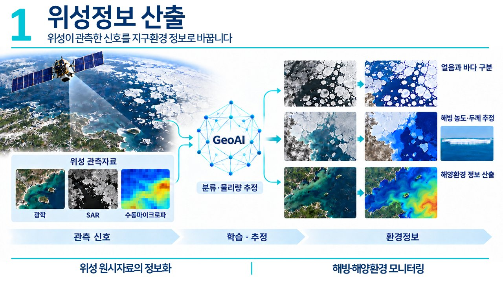
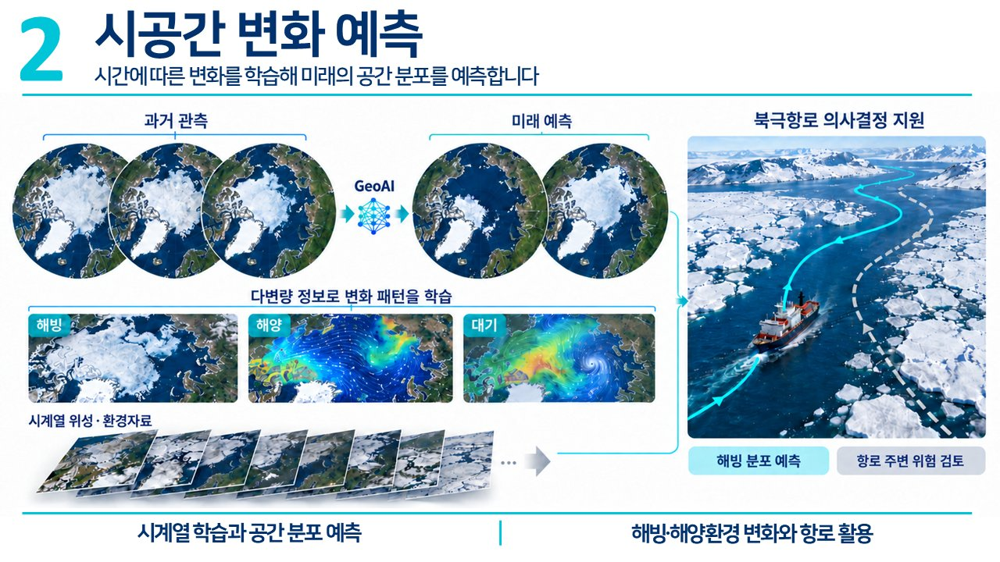
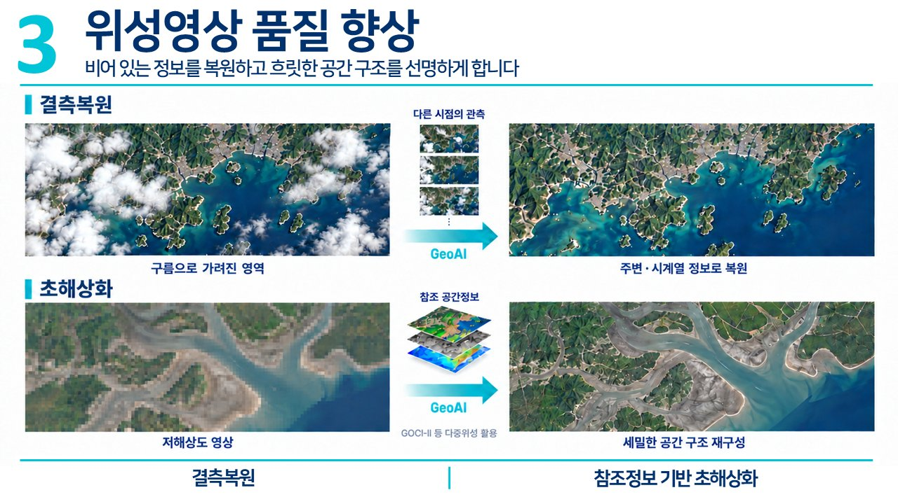
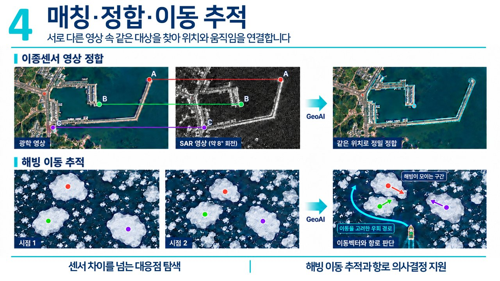
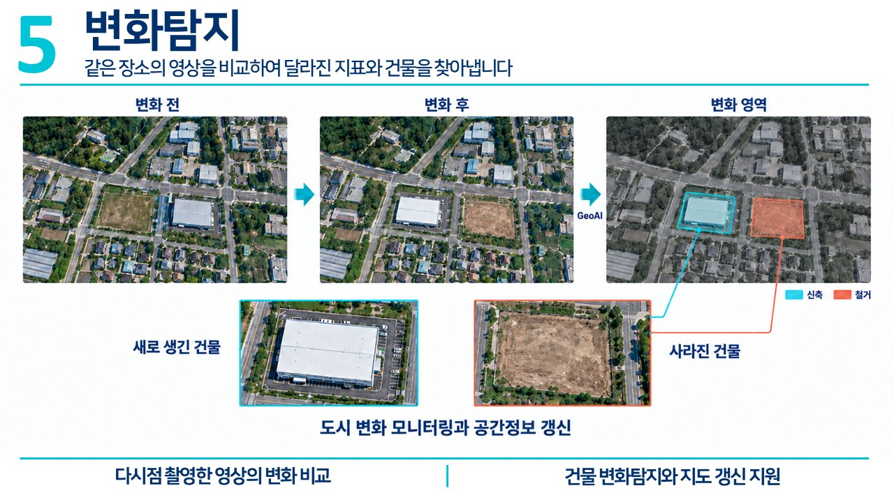
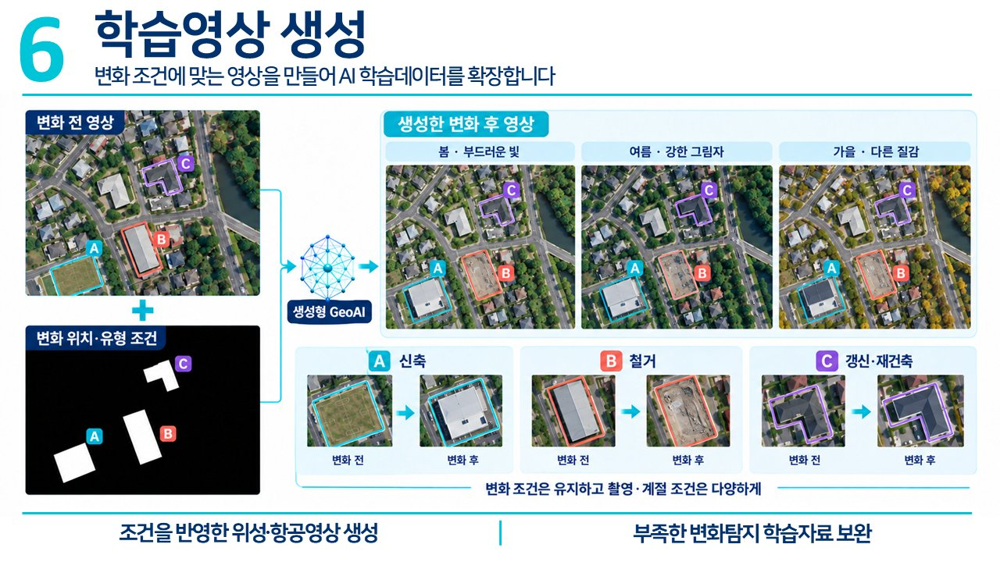
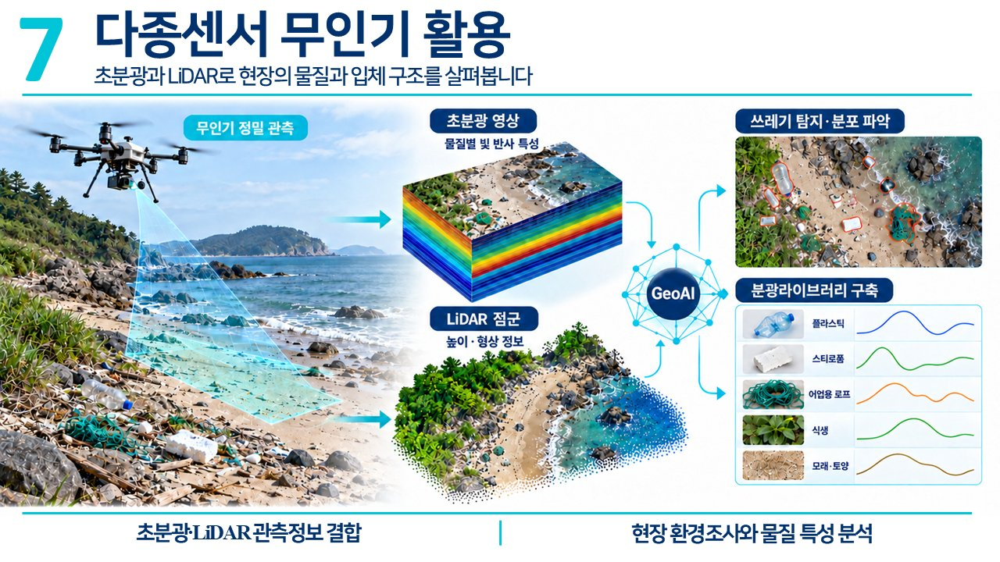
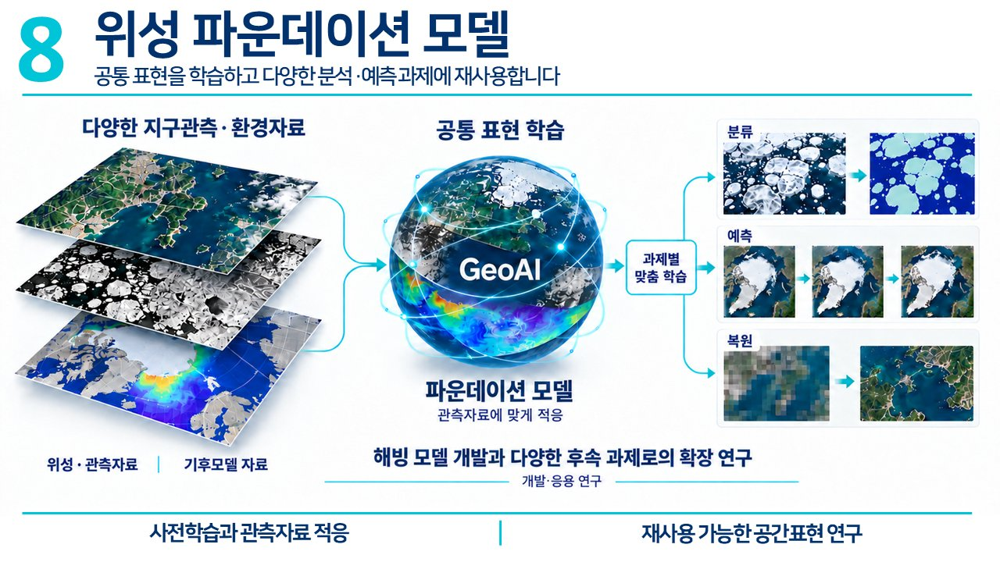

01
위성정보 산출
위성이 관측한 신호를 지구환경 정보로 바꿉니다. 광학·SAR·수동마이크로파 관측자료를 GeoAI로 분류하고 물리량을 추정해 얼음과 바다를 구분하고, 해빙의 농도와 두께, 해양환경 정보를 산출합니다.

위성과 무인기가 관측한 신호를 인공지능으로 해석해 해빙·해양·도시환경의 지금과 다음을 읽습니다.
위성·무인기 데이터와 인공지능을 결합해 지구환경을 분석하고, 관측이 닿지 않는 시간과 공간의 빈틈을 채워 의사결정을 지원합니다.

위성이 관측한 신호를 지구환경 정보로 바꿉니다. 광학·SAR·수동마이크로파 관측자료를 GeoAI로 분류하고 물리량을 추정해 얼음과 바다를 구분하고, 해빙의 농도와 두께, 해양환경 정보를 산출합니다.

시간에 따른 변화를 학습해 미래의 공간 분포를 예측합니다. 해빙·해양·대기 등 다변량 시계열 자료로 변화 패턴을 학습하고, 해빙 분포를 예측해 북극항로의 항로 주변 위험 검토와 의사결정을 지원합니다.

비어 있는 정보를 복원하고 흐릿한 공간 구조를 선명하게 합니다. 구름으로 가려진 영역은 다른 시점의 관측으로 복원하고, 저해상도 영상은 GOCI-II 등 다중위성의 참조 공간정보를 활용해 세밀하게 초해상화합니다.

서로 다른 영상 속 같은 대상을 찾아 위치와 움직임을 연결합니다. 광학·SAR처럼 서로 다른 센서의 영상을 같은 위치로 정밀 정합하고, 해빙의 이동을 시점 간 추적해 이동벡터 기반의 우회 항로를 판단합니다.

같은 장소의 영상을 비교하여 달라진 지표와 건물을 찾아냅니다. 변화 전·후 영상에서 새로 생긴 건물과 사라진 건물을 자동으로 구분해, 도시 변화 모니터링과 지도 갱신을 지원합니다.

변화 조건에 맞는 영상을 만들어 AI 학습데이터를 확장합니다. 신축·철거·갱신 등 변화 위치와 유형 조건은 유지한 채, 계절과 촬영 조건이 다른 영상을 생성형 GeoAI로 만들어 부족한 변화탐지 학습자료를 보완합니다.

초분광과 LiDAR로 현장의 물질과 입체 구조를 살펴봅니다. 무인기로 정밀 관측한 초분광 영상의 물질별 빛 반사 특성과 LiDAR 점군의 높이·형상 정보를 결합해, 해안 쓰레기를 탐지하고 분광라이브러리를 구축합니다.

공통 표현을 학습하고 다양한 분석·예측 과제에 재사용합니다. 위성·기후모델 등 다양한 지구관측 자료로 공통 표현을 사전학습한 뒤, 분류·예측·복원 등 과제별로 맞춤 학습해 해빙 모델과 후속 연구로 확장합니다.
